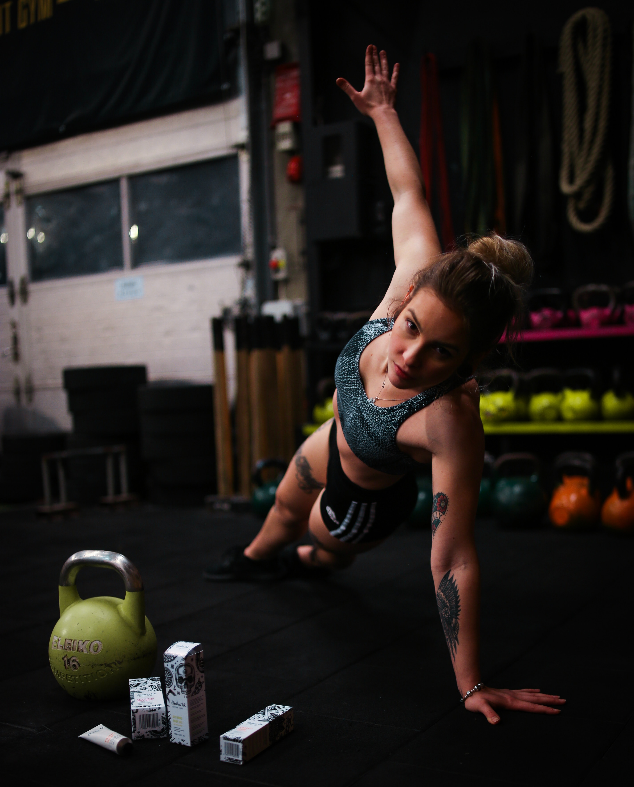

Üdvözlünk konditerműnkben!
Mindenkit szívesen fogadunk, legyél gyenge vagy erős.
Mikor ide belépsz egyenlő vagy a bent lévőkkel.
Rengeteg eszközünk és gépünk áll rendelkezésre minden ügyfelünknek.
Az edzők és a dolgozók is tapasztaltak testépítés téren.
Ha megkérdezed őket, hogyan is kell használni egy gépet, örömmel fognak segíteni.
A szabályzat fülben minden le van írva a termünkről, hogy mit szabad és milyen viselkedés tanusítását várjuk el.
Ugyanezen a fülön megtaláljátok az elérhetőségeinket. Ha bármi kérdésed van, nyugodtan hívj minket vagy írj emailt.
Edzőink, dolgozóink vagy esetleg adminunk tud rá választ adni.
Nincs azzal semmi gond, ha nem tudsz semmit magáról a testépítésről, vagy csak arról, hogyan is tudnád magad formába hozni.
Bérleteknél tudsz olyan kombinált bérletet venni, amiben egy személyi edző lesz majd segítségedre.
Ezt a vásárlás fülnél tudod pontosabban tanulmányozni.
Ha pedig nem szeretnél személyi edzőt magad mellé, akkor sincs gond.
A gépek fülön tudod tanulmányozni a gépeinket és eszközeinket. Találsz róluk képet, leírást, videókat.
Ezek megnézése segítségedre lehet, hogy tudd az adott gyakorlat végrehajtását normálisan csinálni.
Ha helyben vagy és van nálad telefon, márpedig manapság már igen ritka, ha valakinél nincs, le is tudod olvasni a gépeken lévő QR kódot.
Ez a kód felvisz a weboldalra, pontosabban a gépek fülhöz és ott kiválasztja neked a gépet, ezáltal szintén eléred a képet, leírást, videókat.
Ehhez csak egy egyszerű QR kód olvasó alkalmazásra van szükség a telefonon.
Összefoglalva, termünkben megvan minden, hogy egy jó edzést végre tudj hajtani és fejleszd a tested.
Látogass el hozzánk és győződj meg te is erről.
